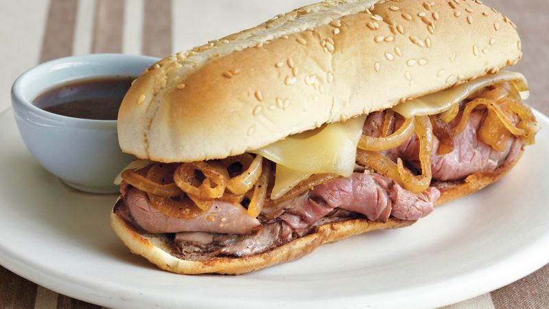

Easy French Dip Sandwiches

Description
Want to impress your family with a fancy meal but don't want to put in any effort? Then this quick and easy French dip sandwich recipe is perfect for you!
Ingredients
- 4 hoagie rolls, split lengthwise
- 1 (10.5 ounce) can beef consomme
- 1 cup water
- 1 pound thinly sliced deli roast beef
- 8 slices provolone cheese
Steps
Here's a very brief overview of what you can expect when you make this sandwich:
- Preheat the oven to 350 degrees F (175 degrees C).
- Open hoagie rolls and lay them out on a baking sheet.
- Heat beef consommé and water in a medium saucepan over medium-high heat to make a rich beef broth. Wow, who knew making broth could be so easy?
- Place roast beef in broth and warm for 3 minutes. You're basically just heating up deli meat at this point, impressive cooking skills.
- Arrange meat on hoagie rolls and top each roll with 2 slices of provolone. This is where the magic happens, the cheese covers up any mistakes you made and makes it look like you put in way more effort than you actually did.
- Bake sandwiches in the preheated oven until cheese melts, about 5 minutes. Voila! You've got a gourmet meal in just a few simple steps.